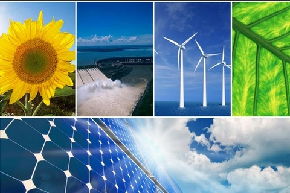

Fuentes de energía renovables
Las energías renovables son fuentes de energía limpias e inagotables, que se diferencia principalmente por su diversidad, abundancia y potencial de aprovechamiento en cualquier parte del planeta, pero sobre todo en que son fuentes totalmente naturales, no producen gases, ni emisiones contaminantes, además de que se renuevan continuamente y las encontramos en cualquier entorno. Por el contrario, existen fuentes de energía no renovables que tardan cientos de millones de años en formarse y emiten algunas emisiones dañinas.
Tipos: Hay muchos tipos de energías renovables cómo:
• La energía solar: es aquella que obtenemos del sol, a través de placas solares.
• La energía eólica: en este caso la electricidad se genera con la fuerza del viento.
• La energía hidráulica: utiliza la fuerza de el agua para generar energía y se produce normalmente en presas.
• Biomasa: en este caso se genera la energía en una central térmica, que consiste en la combustión de residuos orgánicos.
• Biogás: se consigue biodegradando materia orgánica, mediante microorganismos, en dispositivos específicos sin oxígeno.
• La energía del mar: como lo dice el nombre se consigue generar energía gracias a las fuerzas del mar.
• La energía geotérmica: está aprovecha altas temperaturas de yacimientos bajos, normalmente volcánicos.
En general, las energías renovables nos ayudan a potenciar el autoconsumo contribuyendo a que las causas sean mucho más autoeficientes, son beneficiosas para el medio ambiente, son recursos naturales , gratuitos e inagotables y pueden llegar hasta lugares muy aislados.
Bibliografía:
https://www.acciona.com/es/energias-renovables/?_adin=02021864894
Fuentes de energía no renovables

Las energías no renovables son los métodos de producción de energía a partir de una fuente de energía agotable que consume algún tipo de combustible (petróleo, carbón, uranio…) y El ritmo de consumo es mayor que el de su regeneración, la eficiencia de estas fuentes es muy baja e implican la emisión de gases de efecto invernadero, algo que empeora la situación climática. La finalidad de este tipo de energía es, por lo general, generar energía eléctrica y energía mecánica. También se utilizan para generar alguna que otra energía mecánica.
Tipos: En las fuentes no renovables solo hay dos tipos, que son:
• Combustibles fósiles: Se forman a partir de materia orgánica y está a estado expuesta
a altas temperaturas y presiones durante millones de años, como:
-El carbón
-El aceite
-El gas natural
• Fuentes de energía no convencionales:
-Agrocombustibles, biocombustibles. Son combustibles cultivados.
-Combustibles nucleares (uranio y plutonio) utilizados en las centrales nucleares.
La energía geotérmica se considera generalmente una energía renovable. Sin embargo, existe un tipo específico de energía geotérmica que utiliza el agua caliente. Dependiendo de la capacidad de regeneración de estas fuentes termales, la energía geotérmica puede ser una energía no renovable.
En general las fuentes renovables no tienen muchos beneficios, pero ayudan con la producción continua, las centrales eléctricas que funcionan con combustibles fósiles o nucleares son fuentes de energía fiables. Esto significa que pueden suministrar electricidad cuando sea necesario.
Hay bajo coste de combustible, el precio del combustible para este tipo de centrales es relativamente barato.
Bibliografía: